1. 筑豊電気鉄道5000形 tikuden-5000
映射线路：筑豊電気鉄道線
返工：楔形调整，loft-ring 楔形剪切 22.6°，顶后移 0.80 m。提交 a606b63a。

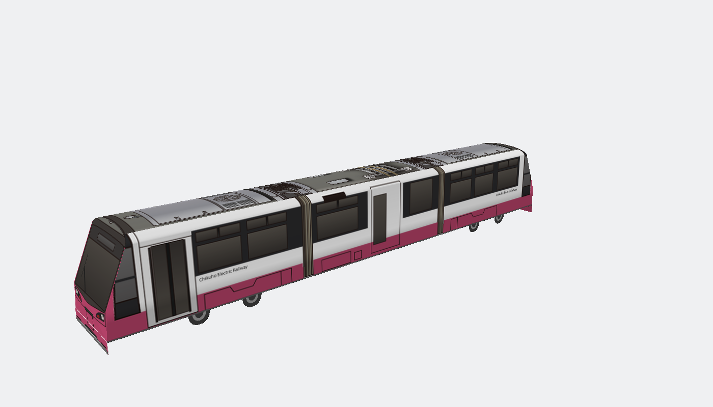
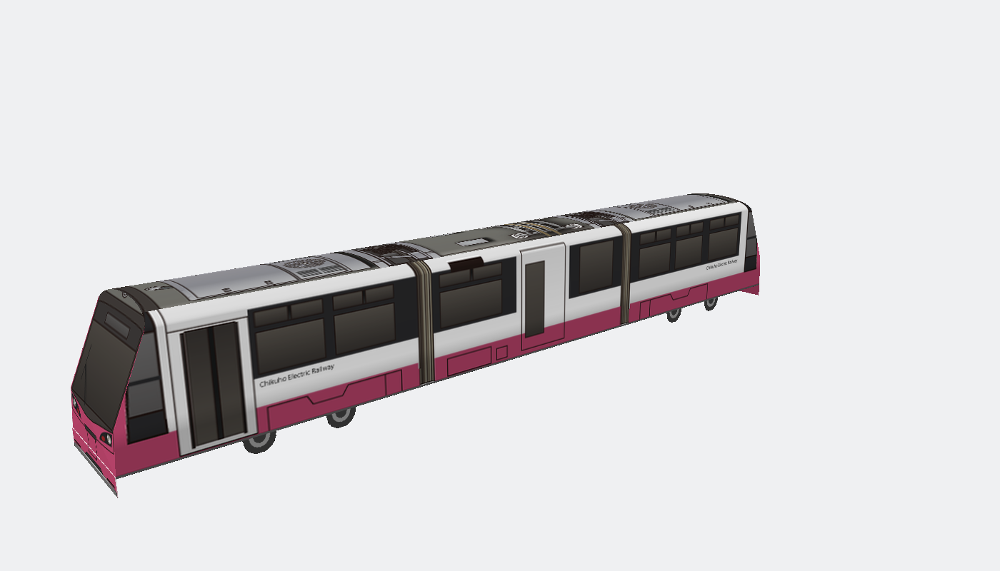
2. 西鉄7050形 nisitetu-7050
映射线路：甘木線
返工：删了重做。v1 轮漂浮无转向架、裙板深褐块拖到轨面、轮位量错；v2 按 skill 1.2.20 重做，真实车底带+转向架，司机面 ROTATE_180 经实车照片核对正确。删 8f10132 → 推 b5e3ebc。

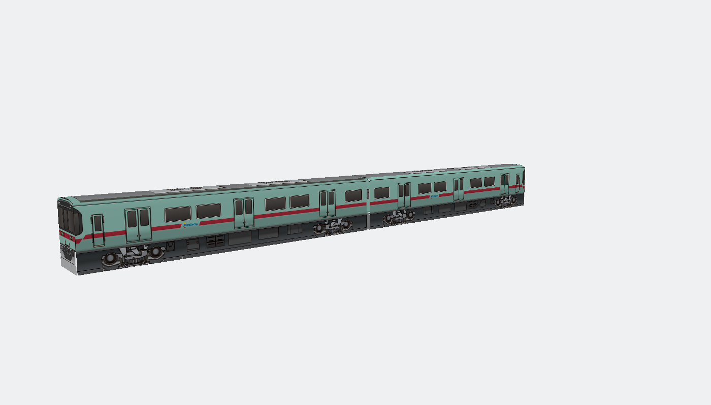
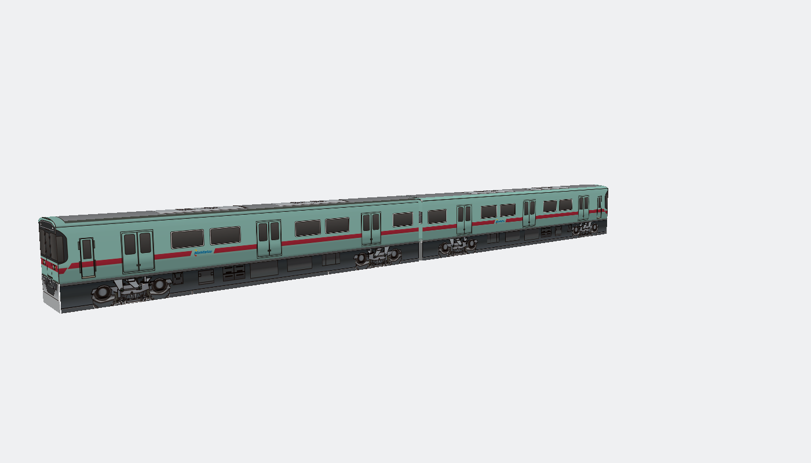
3. 名鉄100系 meitetsu-100
映射线路：豊田線
返工：删了重做。司机面上下颠倒，FLIP_TOP_BOTTOM 翻正（保黄色标记在右）；car1/car4 新，car2/3 未变。删 0c49726 → 推 2416f5a。注：实车后为 6 辆，现 4 辆。二次返工：车底带改取图纸台车侧视条，两台 FS398+设备箱群全回，轮底 y=0，司机面保持翻正版。提交 4a3db5b。
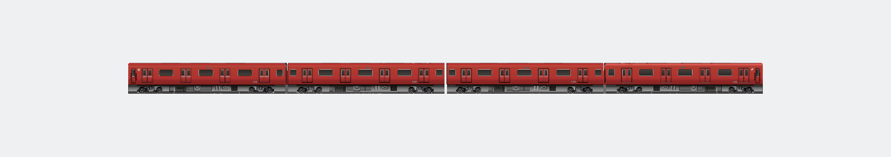
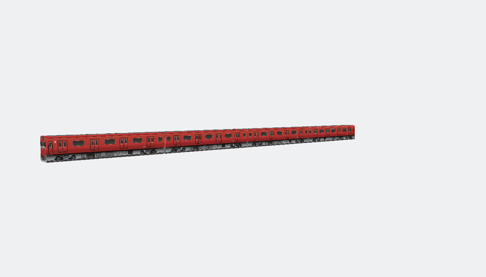

4. 京成8800形 keisei-8800
映射线路：京成松戸線
返工：转向架没扣干净。轮子浮空 0.42 m（下带是不透灰板，MASK 量的是板边非轮底）；清白底、轮重采样为真圆、清横幅+QR。提交 18953b7。二次返工：车底带改用立面图像素，5 设备箱+两台构架全回，保留率 36.9%→45.5%，轮底 y=0。提交 d1784140。

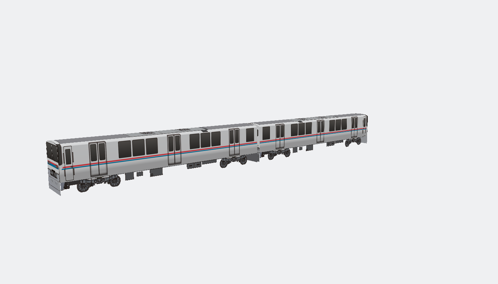
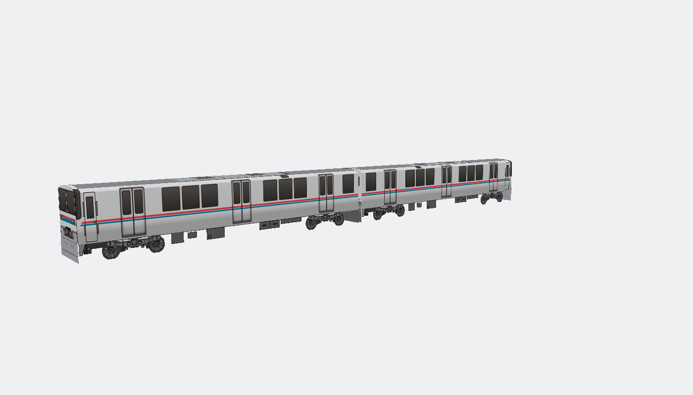
5. 東武N100系「スペーシアX」 tobu-n100
映射线路：未映射（東武日光線第二模型）
返工：头型不是方的，按实车图改。鼻尖 2.62 m、约 38° 斜坡 1.82 m；仅几何，贴图与 v1 字节一致。提交 755c8fd。二次返工：司机室白黏贴耳裁净，头型/转向架/车底未动。提交 5da1cc4。

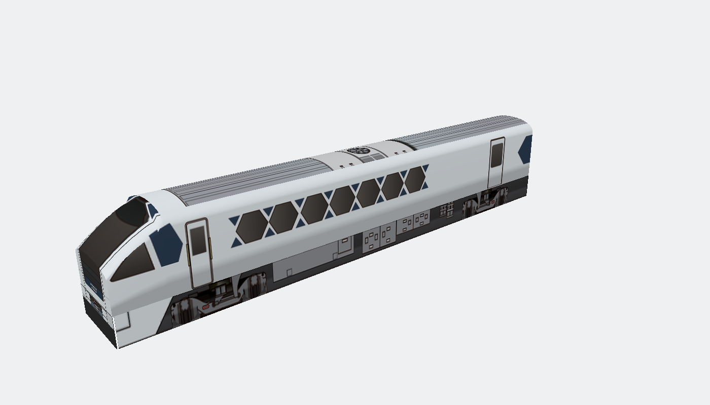
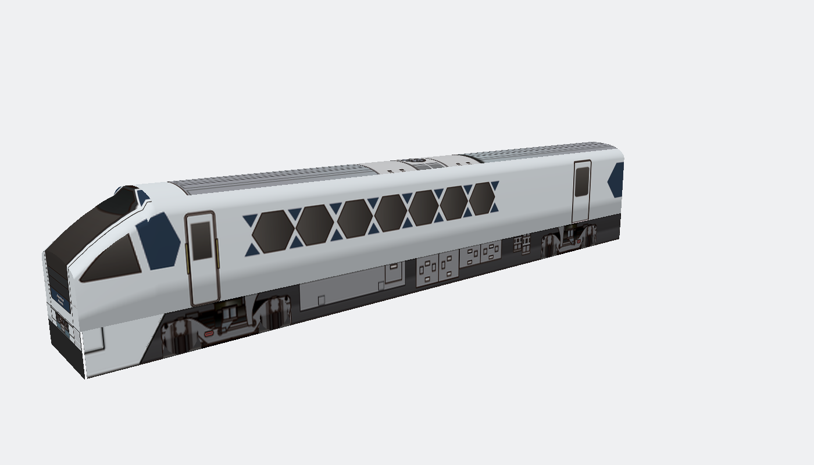
6. JR東海383系「ワイドビューしなの」 jr-tokai-383
映射线路：篠ノ井線
返工：补全整列、头型不对。⚠️ 未补到 6 辆：实车标准 6 辆 3M3T，图纸仅 2 张先头车净片，缺 5 张（モハ383、サハ383、モハ383-100、サハ383-100、クモハ383），翻转 Tc 造假车不可取；本次原 car2（クロ383 翻转复制）换成图纸右净片真实车クロ383-100，现 2 辆真实先头车、贯通端面对面；头型重修流线鼻锥并对照实车照片核过。提交 b78c856。二次返工：侧板重组取带（窗 1.95–2.98 m、橙带中心 1.75 m）、鼻锥 1.2 m、鼻尖 3.44/3.37 m、车底填白、转向架残影清净；仍 2 辆真实先头车，缺 5 张中间车图纸未补到 6 辆。提交 f84f34e3。
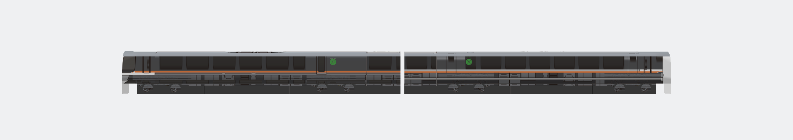
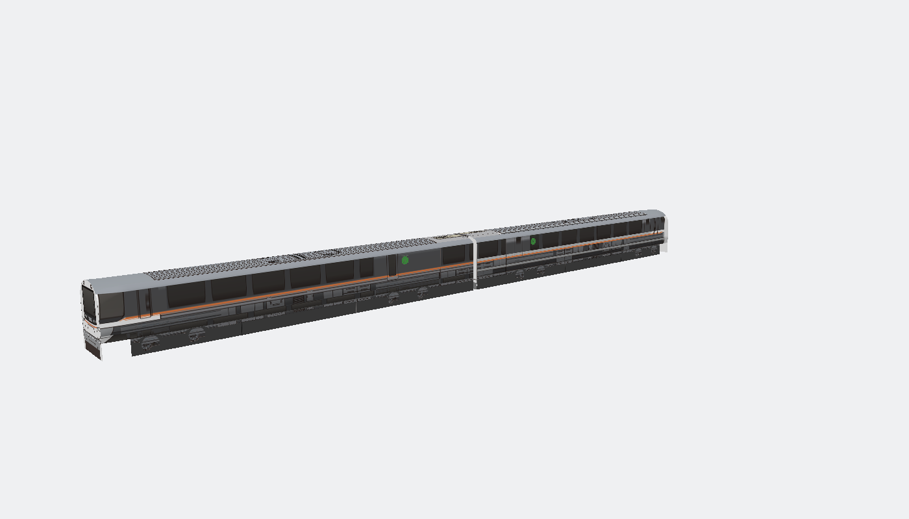
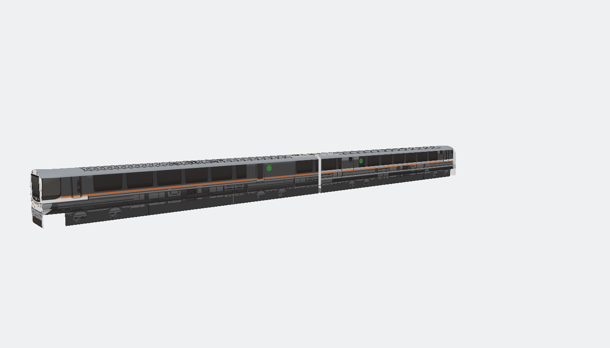
7. 大井川鐵道21000系 oigawa-21000
映射线路：大井川鐵道線
返工：转向架没扣干净。下带框线+95–99 行纸边、轮下弧拉伸假内容；加宽源重采样修掉。提交 ebcb7bf。
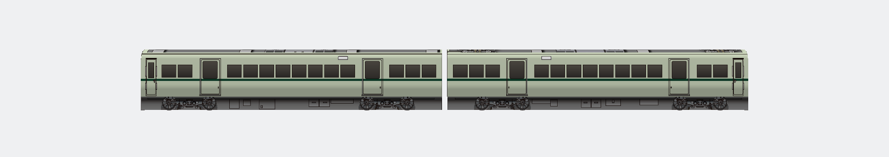
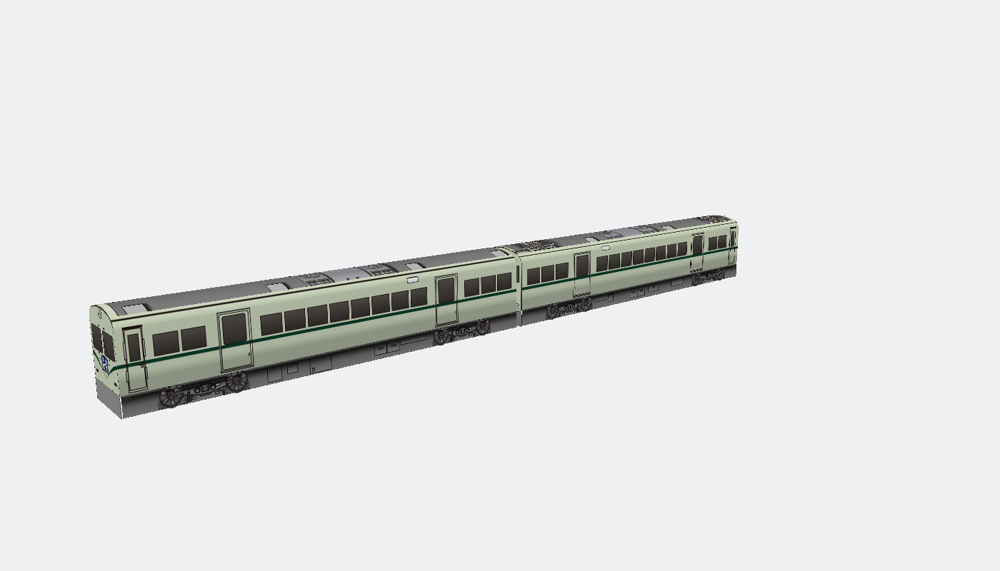
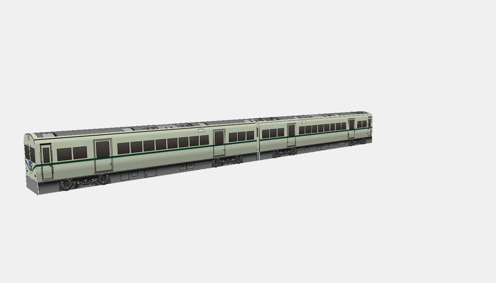
8. 南海7100系 nankai-7100
映射线路：加太線
返工：删了重做。car2 侧面复用 car1 侧面（实车 Tc 侧=Mc 侧），加司机门+斜带+NANKAI 字。删 7f8572a/9350d07 → 推 4db2b3f。注：两头司机面都印 7110（图纸原号）。二次返工：车底带改用图纸 R 条恢复设备，car1 主电阻器 13 格百叶栅格、car2 设备箱群，保留率 19%→99.8%，轮底 y=0。提交 fd5575a。
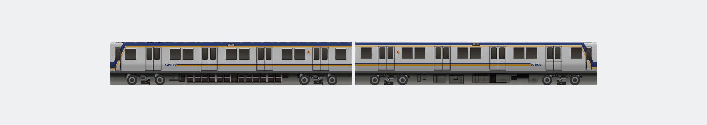


9. JR東海315系 jr-tokai-315
映射线路：東海道本線
返工：删了重做。v2 方向本无错，实因是图纸 0 行暗边造成司机裙 0.19 m 暗带；裁 3 行+中灰填。删 26c9b9e → 推 1d2107f3。二次返工：联结器盒上移 0.156 m、前脸下部灰带填白，司机面顺序与橙带核对无误。提交 3c22acd。
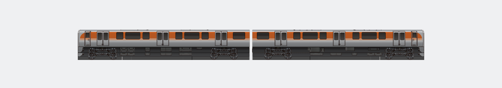

10. 近鉄3200系 kintetsu-3200
映射线路：天理線
返工：司机室两侧多余纸没裁干净。端面件左右各 33–36 px 白纸梯形翼（含黑折线），按行中位色填满；另修 net1 侧条顶角白纸。提交 12af34e。注：脸号 3104/3105 不一致为原图瑕疵，等用户定夺。
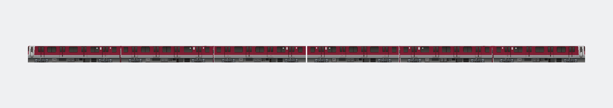
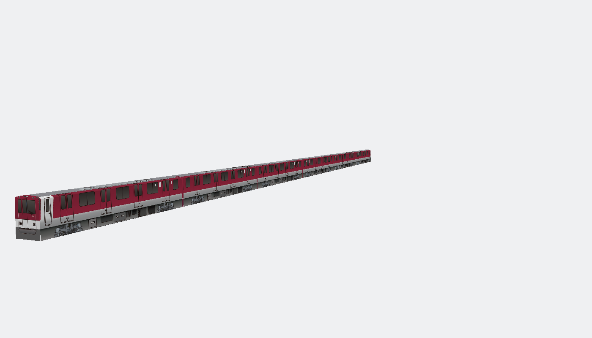
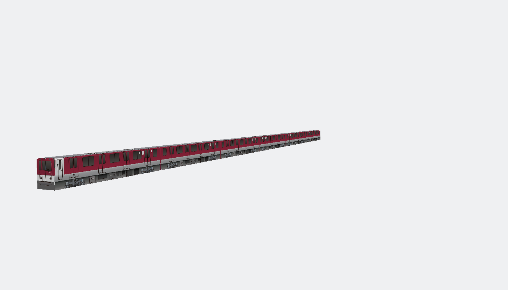
11. JR西日本283系「オーシャンアロー」 jr-west-283
映射线路：きのくに線
返工：补全编组。补到 6 辆 HB630 3+3（car4=car3 绕 Y 旋 180°，car5/6=car2/3 复制）；car1–3 未变。提交 9e1af095。注：9 辆编组需サハ283 图纸（无）。二次返工：站内中间一对 car3–car4 贯通端相对，consist 仅 car3/car4 加 flip + car3/4/6 的 side_f 贴图 U→1−U 解镜像；car6 本就是司机端。提交 3683ad34。
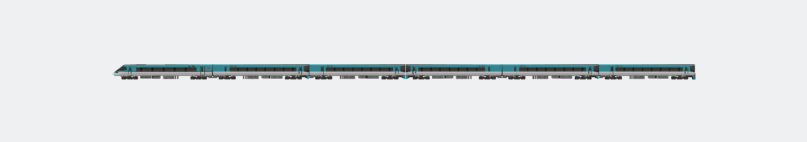

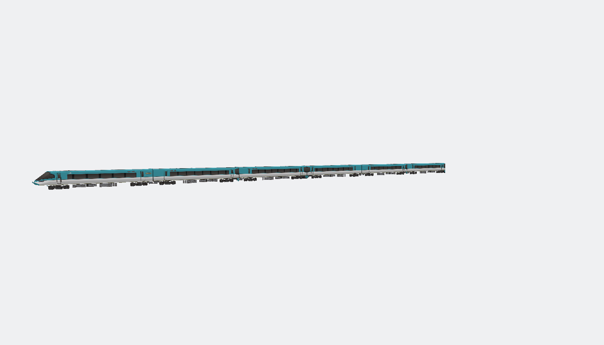
12. 西鉄9000形 nisitetu-9000
映射线路：天神大牟田線
返工：司机上下颠倒。仅 cab 前片 rot False→True；corr 全 -1.00 抓不到倒置，以特征顺序核对。提交 8c7b3d1（仅 car1）。
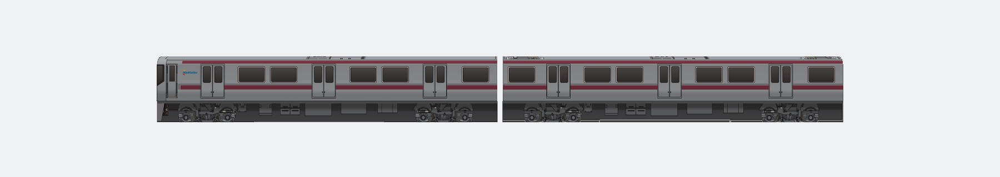
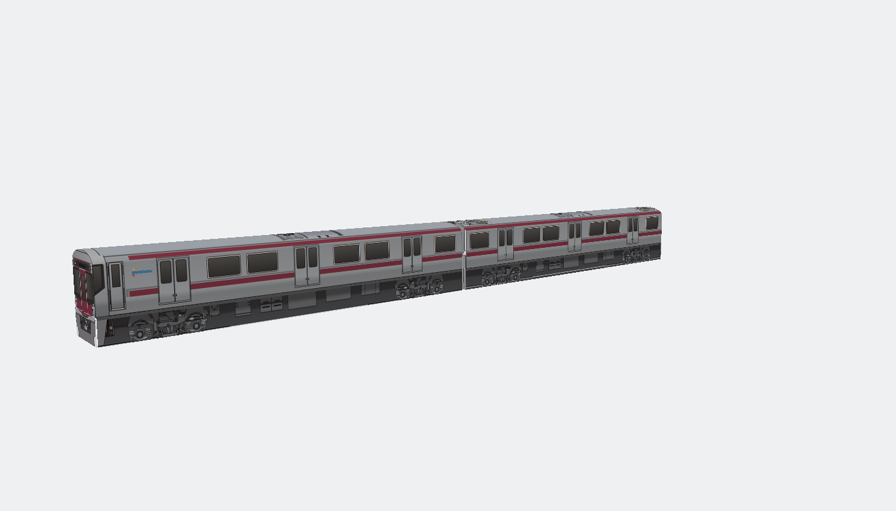
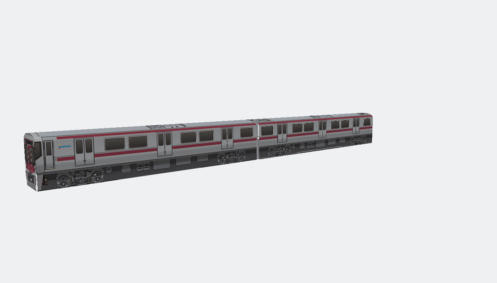
13. とさでん交通1000形 tosaden-1000
映射线路：駅前線
返工：司机室两侧裁剪拼接再检查。端件框含每侧约 24 px 粘贴翼，端件内缩+行尾延伸修掉。提交 a2ca18f。注：图纸风挡约占面宽 97%（实车约 80%），按图纸未改，等用户定夺。
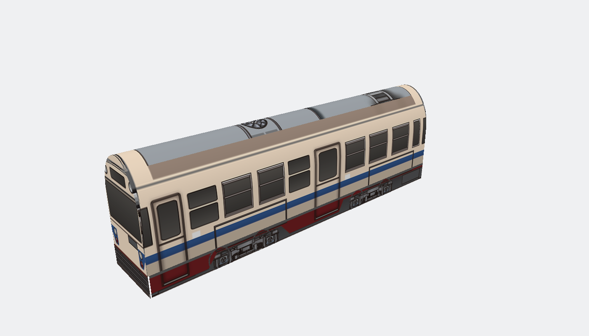
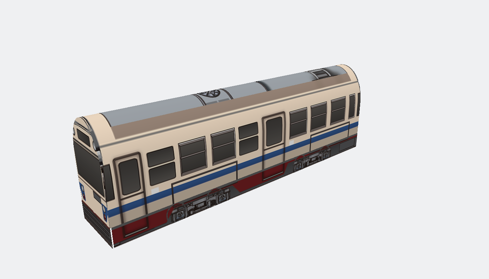
14. 東急3020系 tokyu-3020
映射线路：未映射（目黒線第二模型）
返工：车头く形。按立面图修く形（最凸点 1.26–1.63 m，顶后缩 0.51 m，裙底 0.31 m）。提交 e020a14。注：实车 8 辆，图纸仅 3 张；平面折线未做，需用户确认。
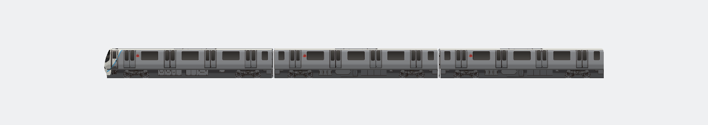
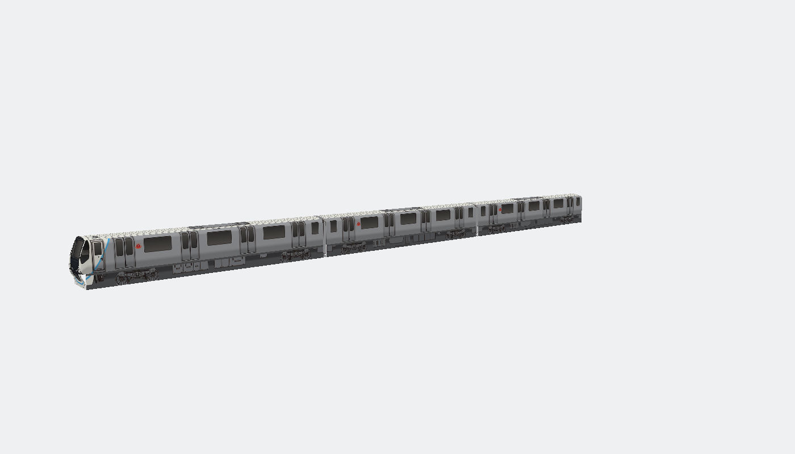
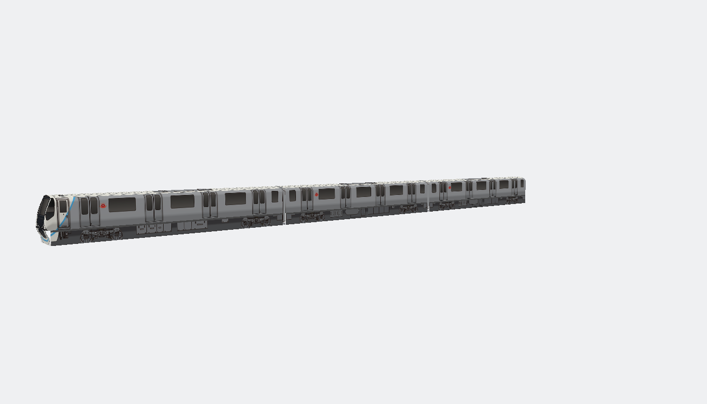